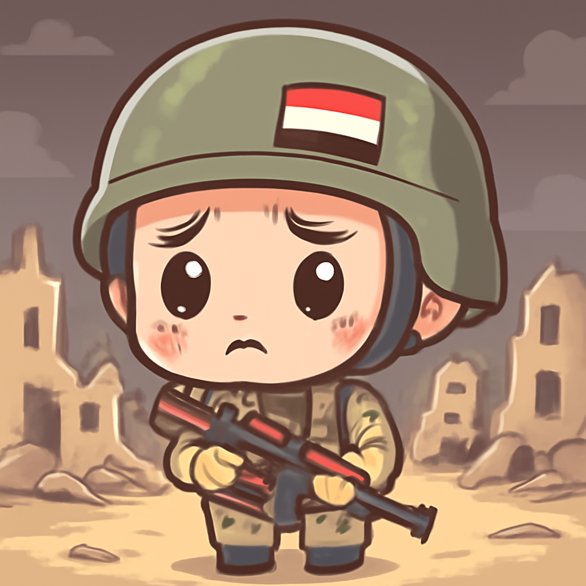

其一 · 也門 · 800人死於胡塞與沙國戰爭
戰爭造成也門嚴重人道危機，800人喪命。

在也門，胡塞武裝與沙烏地阿拉伯支持的政府軍之間的衝突再度升級，根據世界衛生組織的報告，最近有超過800人喪命。這場戰爭已經造成世界上最嚴重的人道危機之一，讓人感到心痛。希望有一天，這片土地能夠重見和平。
🔗 原始新聞 ↗
2026-09-29 · 以古觀今，以笑抗愁
戰爭造成也門嚴重人道危機，800人喪命。

在也門，胡塞武裝與沙烏地阿拉伯支持的政府軍之間的衝突再度升級，根據世界衛生組織的報告，最近有超過800人喪命。這場戰爭已經造成世界上最嚴重的人道危機之一，讓人感到心痛。希望有一天，這片土地能夠重見和平。
🔗 原始新聞 ↗
烏克蘭將北韓戰俘送南韓，南韓不滿曝光。
在南韓首爾，烏克蘭近日將兩名北韓戰俘送往南韓，引發南韓政府的不滿，因為這本是秘密行動。這起事件不僅涉及國際關係，還可能影響到烏克蘭與北韓的外交策略。看來這場外交「隱藏球」真是一場高難度的遊戲！
🔗 原始新聞 ↗
南非連續多起女性謀殺，總統表達譴責。
南非最近發生多起女性被謀殺的案件，自七月以來已經有12名女性遇害，讓全國上下感到震驚。總統拉馬福薩表示，這是對國家良知的污點，呼籲加強保護女性的措施。希望未來能有更多的安全保障，讓人們不再生活在恐懼之中。
🔗 原始新聞 ↗
法國學生因班級過擠抗議，政府呼籲克制。
在法國，學生因為課堂人數過多等問題發起抗議，導致164人被捕。法國總理對此表示強烈譴責，並呼籲大家冷靜對待這場抗議。看來學生們的怒火真是燒得不輕，不過希望能夠在理性的對話中找到解決之道！
🔗 原始新聞 ↗
英國RAF基地附近五人被捕後獲釋，調查仍在進行中。
在英國，一起疑似恐怖襲擊的事件引發關注，五名男子因在 RAF Fairford基地附近被捕後獲釋，但仍然在調查中。此事件讓人對安全問題有了更深的考量，尤其是在當前全球局勢緊張的情況下。希望未來能有更多的安全措施，以確保每個人的安全。
🔗 原始新聞 ↗